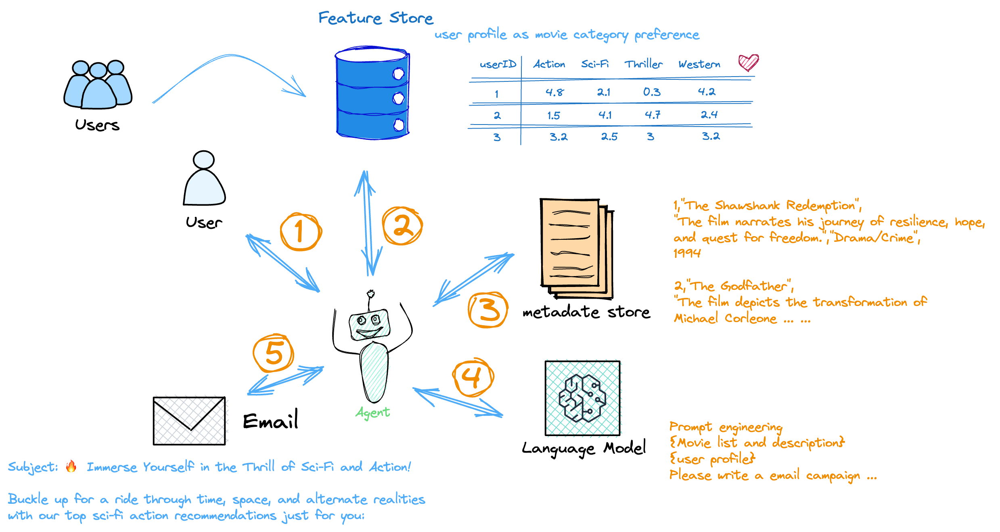

What are AI agents ?
An artificial intelligence (AI) agent refers to a system or program that is capable of autonomously performing tasks on behalf of a user or another system by designing its workflow and utilizing available tools.
These agents can be implemented in various applications in order to solve and work on complex tasks in different fields from software design and IT automation to code generation, problem solving , conversational assistants, descision making , interacting with external environments and executing actions. They use advanced NLP ( natural language processing ) techniques of large language models (LLMs) to comprehend and respond to user inputs step-by-step and determine when to call on external tools.
But what makes them any different from other chatbots?
Agentic vs Non-Agentic Chatbots
Non-agentic AI chatbots are ones without available tools, memory and reasoning. They can only reach short-term goals and cannot plan ahead. As we know them, non-agentic chatbots require continuous user input to respond. They can produce responses to common prompts that most likely align with user expectations but perform poorly on questions unique to the user and their data. Since these chatbots do not hold memory, they cannot learn from their mistakes if their responses are unsatisfactory.
In contrast, agentic AI chatbots learn to adapt to user expectations over time, providing a more personalized experience and comprehensive responses. They can complete complex tasks by creating subtasks without human intervention and considering different plans. These plans can also be self-corrected and updated as needed. Agentic AI chatbots, unlike non-agentic ones, assess their tools and use their available resources to fill in information gaps.
So, how to build these AI Agents?
What are the key components of AI agent architecture?
Agents in artificial intelligence may operate in different environments to accomplish unique purposes. However, all functional agents share these components.
Architecture
Architecture is the base the agent operates from. The architecture can be a physical structure, a software program, or a combination. For example, a robotic AI agent consists of actuators, sensors, motors, and robotic arms. Meanwhile, an architecture that hosts an AI software agent may use a text prompt, API, and databases to enable autonomous operations.
Agent function
The agent function describes how the data collected is translated into actions that support the agent’s objective. When designing the agent function, developers consider the type of information, AI capabilities, knowledge base, feedback mechanism, and other technologies required.
Agent program
An agent program is the implementation of the agent function. It involves developing, training, and deploying the AI agent on the designated architecture. The agent program aligns the agent’s business logic, technical requirements, and performance elements.
So, how do these agents work ?
How AI agents work
At the core AI agents are LLMs , that’s why they are ofently called LLM agents. But the difference is that traditional LLMs rely on the data that was used to train them to generate their responses, hence they are bounded by knowledge and resonning limitations. In contrast, agentic AI and technology in general uses tool calling on the backend to obtain up-to-date information, optimize workflow and create subtasks autonomously to achieve complex goals. In this process, the autonomous agent learns to adapt to user expectations over time. The agent’s ability to store past interactions in memory and plan future actions encourages a personalized experience and comprehensive responses.
Goal initialisation and planning
Although AI agents are autonomous in their decision-making processes , they require a set goal and environement defined by humans. There are three main influences on autonomous agent behavior:
- The team of developers that design and train the agentic AI system.
- The team that deploys the agent and provides the user with access to it.
- The user that provides the AI agent with specific goals to accomplish and establishes available tools to use.
Given the user’s goals and the agent’s available tools, the AI agents then performs task decomposition to improve performance. Essentially, the agent creates a plan of specific tasks and subtasks to acomplish the complex task, but on the other hand, for simple task, planning is not crucial. Instead, an agent can iteratively reflect on its responses and improve them without planning its next steps.
Resonnning using available tools
Generally, AI agents don’t have the full knowledge on the complex task they are going to tackle neither its subtasks. So in order to surpass this limitation, these agents use their available tools: external data sets, web searches, APIs and even other agents ( Hierarchical agents ). After the missing information is retrieved from these tools, the agent can update its knowledge base. This means that each step of the way, the agent reassesses its plan of action and self-corrects.
Learning and Reflection - Implement Tasks
AI agents use feedback mechanisms, such as other AI agents and human-in-the-loop (HITL), to improve the accuracy of their responses. After the agent forms its response to the user, the agent stores the learned information along with the user’s feedback to improve performance and adjust to user preferences for future goals.
If other agents were used to reach the goal, their feedback may also be used. Multi-agent feedback can be especially useful in minimizing the time that human users spend providing direction. However, users can also provide feedback throughout the agent’s actions and internal reasoning to better align the results with the intended goal.
Feedback mechanisms improve the AI agent’s reasoning and accuracy, which is commonly referred to as iterative refinement. To avoid repeating the same mistakes, AI agents can also store data about solutions to previous obstacles in a knowledge base.

Resoning pradigms
ReAct (Reasoning and Action)
With this paradigm, we can instruct agents to “think” and plan after each action taken and with each tool response to decide which tool to use next. These Think-Act-Observe loops are used to solve problems step by step and iteratively improve upon responses. Through the prompt structure, agents continuously update their context with new reasoning. This can be interpreted as a form of Chain-of-Thought prompting. ( Learn more at the prompt engineering article )
ReWOO (Reasoning WithOut Observation)
The ReWOO method, unlike ReAct, eliminates the dependence on tool outputs for action planning. Instead, agents plan upfront. Redundant tool usage is avoided by anticipating which tools to use upon receiving the initial prompt from the user. This is desirable from a human-centered perspective since the user can confirm the plan before it is executed.
The ReWOO workflow is made up of three modules. In the planning module, the agent anticipates its next steps given a user’s prompt. The next stage entails collecting the outputs produced by calling these tools. Lastly, the agent pairs the initial plan with the tool outputs to formulate a response. This planning ahead can greatly reduce token usage and computational complexity as well as the repercussions of intermediate tool failure.
Types of AI agents
AI agents can be developed to have varying levels of capabilities. There exists simple AI agents designed for solving and working on simple tasks, while there are high level complex AI agents that are responsible of solving complex tasks. Below the types of AI agents are cited from the simplest to the most complex:
-
Simple Reflex Agents
A simple reflex agent operates strictly based on predefined rules and its immediate data.This agent does not hold any memory, nor does it interact with other agents if it is missing information. It will not respond to situations beyond a given event condition action rule. Hence, these agents are suitable for simple tasks that don’t require extensive training.
-
Model based reflex AI agents
Model-based reflex agents use both their current perception and memory to maintain an internal model of the world. As the agent continues to receive new information, the model is updated. The agent’s actions depend on its model, reflexes, previous precepts and current state.
These agents, unlike simple reflex agents, can store information in memory and can operate in environments that are partially observable and changing. However, they are still limited by their set of rules.
-
Goal based agents
Goal-based agents, or rule-based agents, are AI agents with more robust reasoning capabilities. Besides evaluating the environment data, the agent compares different approaches to help it achieve the desired outcome. Goal-based agents always choose the most efficient path. They are suitable for performing complex tasks, such as natural language processing (NLP) and robotics applications.
-
Utility based Agents
A utility-based agent uses a complex reasoning algorithm to help users maximize the outcome they desire. The agent compares different scenarios and their respective utility values or benefits. Then, it chooses one that provides users with the most rewards. Utility is calculated using a utility function. This function assigns a utility value, a metric measuring the usefulness of an action or how “happy” it will make the agent, to each scenario based on a set of fixed criteria. The criteria can include factors such as progression toward the goal, time requirements, or computational complexity.
-
Learning Agents
Learning agents hold the same capabilities as the other agent types but are unique in their ability to learn. New experiences are added to their initial knowledge base, which occurs autonomously. This learning enhances the agent’s ability to operate in unfamiliar environments. Learning agents may be utility or goal-based in their reasoning and are comprised of four main elements:
- Learning: This improves the agent’s knowledge by learning from the environment through its precepts and sensors.
- Critic: This provides feedback to the agent on whether the quality of its responses meets the performance standard.
- Performance: This element is responsible for selecting actions upon learning.
- Problem generator: This creates various proposals for actions to be taken.
-
Hierarchical agents
Hierarchical agents are an organized group of intelligent agents arranged in tiers. The higher-level agents deconstruct complex tasks into smaller ones and assign them to lower-level agents. Each agent runs independently and submits a progress report to its supervising agent. The higher-level agent collects the results and coordinates subordinate agents to ensure they collectively achieve goals.
Benefits of AI agents
Improved productivity
AI agents are autonomous intelligent systems performing specific tasks without human intervention. Organizations use AI agents to achieve specific goals and more efficient business outcomes. Business teams are more productive when they delegate repetitive tasks to AI agents. This way, they can divert their attention to mission-critical or creative activities, adding more value to their organization.
Reduced costs
Businesses can use intelligent agents to reduce unnecessary costs arising from process inefficiencies, human errors, and manual processes. You can confidently perform complex tasks because autonomous agents follow a consistent model that adapts to changing environments.
Informed decision-making
Advanced intelligent agents use machine learning (ML) to gather and process massive amounts of real-time data. This allows business managers to make better predictions at pace when strategizing their next move. For example, you can use AI agents to analyze product demands in different market segments when running an ad campaign.
Improved customer experience
Customers seek engaging and personalized experiences when interacting with businesses. Integrating AI agents allows businesses to personalize product recommendations, provide prompt responses, and innovate to improve customer engagement, conversion, and loyalty.
The challenges of using AI agents
Multi-agent dependencies
Certain complex tasks require the knowledge of multiple AI agents. When implementing these multi-agent frameworks, there is a risk of malfunction. Multi-agent systems built on the same foundation models may experience shared pitfalls. Such weaknesses could cause a system-wide failure of all involved agents or expose vulnerability to adverse attacks. This highlights the importance of data governance in building foundation models and thorough training and testing processes.
Infinite feedback loops
The convenience of the hands-off reasoning for human users using AI agents also comes with its risks. Agents that are unable to create a comprehensive plan or reflect on their findings, may find themselves repeatedly calling the same tools, invoking infinite feedback loops. To avoid these redundancies, some level of real-time human monitoring may be used.
Computational complexity
Building AI agents from scratch is both time-consuming and can also be very computationally expensive. The resources required for training a high-performance agent can be extensive. Additionally, depending on the complexity of the task, agents can take several days to complete tasks.
A good Practice :
Human supervision
To assist in the learning process for AI agents, especially in their early stages in a new environment, it can be helpful to provide occasional human feedback. This allows the AI agent to compare its performance to the expected standard and adjust accordingly. This form of feedback is helpful in improving the agent’s adaptability to user preferences.
Apart from this, it is best practice to require human approval before an AI agent takes highly impactful actions. For instance, actions ranging from sending mass emails to financial trading should require human confirmation. Some level of human monitoring is recommended for such high-risk domains.